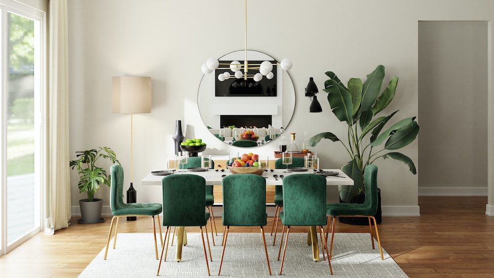

Keni menduar te investoni ne nje shtepi te re,por nuk jeni te sigurt si ta dizenjoni ate?Atehere jeni ne vendin e duhur
Nëse ju pëlqen ideja e karrigeve të ngrënies të përziera, por megjithatë vlerësoni një element koheziviteti, përdorni të njëjtën karrige me ngjyra dhe përfundime të ndryshme. Këtu, dyshja e dizajnit Cortney dhe Robert Novogratz shtuan të njëjtën karrige në pëlhura të ndryshme neutrale dhe dekorime druri në tryezën e ngrënies 12 metra të gjatë në shtëpinë e tyre në West Village.
Sigurohuni që përbërësit për mbushjet e koktejve dhe mokteileve të jenë të arritshëm duke përfshirë një njësi bari të integruar, si ai në këtë dhomë ngrënie nga projektuesi Eneia White. Njësia e personalizuar duket si një pjesë e vërtetë e mobiljeve falë një shtrese bojë sateni të zi nga Benjamin Moore dhe pajisjeve të frymëzuara nga antike të marra nga Etsy.
Gjithçka brenda dhomës tuaj të ngrënies është thelbësore, por po ashtu është edhe hyrja në të. Këtu, stilisti Lathem Gordon ka përshtatur hyrjen e dhomës së ngrënies së shtëpisë së saj në Atlanta me një mur galerie të punuar me kujdes që vendos tonin për të gjitha gjetjet e shitjeve të pasurive dhe pjesët e transmetuara nëpër breza që gjenden brenda.
Nëse banoni në një apartament me hapësirë të kufizuar ngrënieje, thjesht mos e fusni tryezën në qoshe. Në vend të kësaj, vendoseni në një kënd siç bëri stilistja Jasmine Lam në banesën e saj në Londër. Një divan i lakuar ankoron asamblenë dhe e bën atë të ndihet më tërheqës.
